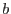
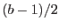

| Parameter | Mand | Type | Default | Constraints |
| boxhalfsize | yes | integer | |  boxhalfsize boxhalfsize |
This should match the value of -boxsize supplied to eboxdetect. Suppose -boxsize=; the corresponding value of boxhalfsize should be . Note that -boxsize as presently defined in eboxdetect
is always odd.
|
| naxial | no | integer | 36 | naxial |
The number of angles around the optic axis at which the PSF will be sampled to make a convolver. The total number of convolvers is naxial nradial. nradial.
|
| nradial | no | integer | 10 |  nradial nradial |
The number of radii out from the optic axis at which the PSF will be sampled to make a convolver. The total number of convolvers is naxialnradial.
|
| expmapset | yes | dataset | | |
What should be supplied here is a template image which is of the same dimensions and coordinates as the images and exposure maps which were supplied to eboxdetect. The supplied image must contain WCS keywords which describe the coordinate system.
|
| convolversset | yes | dataset | | |
The output dataset which contains both the convolvers and the index image relating them to the camera field of view. The format of this dataset is described in the documentation for asmooth.
|
| efraction | no | real | 0.9 |  efraction efraction |
The PSF spreads across the whole field of view, so for practical reasons a smaller, truncated core image is usually obtained. At present econvolverprep
obtains the medium-accuracy (= ray-trace-modelled), truncated PSF function from the cal
library. The cal
calculates the truncation point so that the included part of the PSF contains approximately the fraction of total flux specified by the present parameter. NOTE! At present there is NO protection to ensure that the returned PSF extends beyond the boundaries of the detection box (the size of which is specified via boxhalfsize). However there is a warning message which relates to this case.
|
| psfestyle | no | string | user | user|dss |
eboxdetect
works in general on a list of images of the same part of the sky in different energy bands. Since the PSF varies with energy, a different set of convolvers is required for each band. The mean values of the energy band can be supplied to econvolverprep
in one of two ways: either directly via the parameter psfenergy, or via a data subspace (DSS) record of all event selections within the image dataset itself as supplied to the parameter dssimageset. NOTE that the inclusion of a DSS in XMM EPIC images is optional, so one may not be present.
|
| psfenergy | yes | real | | psfenergy |
If psfestyle=`user', the task looks for the mean energy value in the present parameter.
|
| dssimageset | yes | dataset | | |
If psfestyle=`dss', the task looks for the mean energy value in the data subspace of the image set supplied to the present parameter.
|
| Parameter | Mand | Type | Default | Constraints |